|
. v1.3.6
|
Loading...
Searching...
No Matches
|
. v1.3.6
|
| Dependencies | None |
|---|---|
| CMakeLists.txt | set( PLUGINS "boundarylayerconductance" ) |
| Header File | #include "BoundaryLayerConductanceModel.h" |
| Class | BLConductanceModel |
None.
The boundary-layer conductance to heat describes the rate of energy transfer across the primitive boundary-layer for a given driving temperature difference. Currently, four different boundary-layer conductance models are available as part of this plug-in.
| Constructors |
|---|
| BLConductanceModel( helios::Context* context) |
The BLConductanceModel class is initialized by simply passing a pointer to the Helios context as an argument to the constructor.
| Primitive Data | Units | Data Type | Description | Available Plug-ins | Default Value |
|---|---|---|---|---|---|
| wind_speed | m/s | float | Air wind speed just outside of primitive boundary-layer. | N/A | 1 m/s |
| object_length | m | float | Characteristic dimension of object formed by primitive. | N/A | Square root of primitive surface area |
| air_temperature | Kelvin | float | Ambient air temperature outside of surface boundary layer. | N/A | 290 K |
| surface_temperature | Kelvin | float | Object surface temperature. | EnergyBalanceModel | 300 K |
| twosided_flag | N/A | uint | Number of primitive faces with energy transfer (must be 1 or 2). | N/A | 2 |
| Primitive Data | Units | Data Type | Description |
|---|---|---|---|
| boundarylayer_conductance | mol air/m2-s | float | Primitive boundary-layer conductance calculated by this plug-in. |
Inputs to the model are set by creating primitive variable data in the usual way. If a variable needed for a model input has not been create in the Context, the default value is assumed.
There are four different built-in models for the boundary-layer conductance. The boundary-layer conductance model is set using the setBoundaryLayerModel() function, which takes as arguments the UUID(s) of primitives for which the model is to be set, and a string referencing the chosen model. Possible models are summarized in the table below and described in further detail below. If the setBoundaryLayerModel() is called for some UUIDs but not others, the plug-in will assume the default model (Polhausen) for any primitives for which no model was explicitly set.
It is also important to note that, by default, the length scale used to calculate the boundary-layer conductance is taken to be the square root of the primitive surface area. If the size of the object is different from the size of the primitive, then it is important to manually set the length scale to be the size of the object, as this is the relevant scale for boundary-layer development. This is usually necesary when using the boundary-layer conductance model for a sphere, for example.
The four available models are described in detail below:
| Model | string argument |
|---|---|
| 1. Polhausen Equation (default) | "Polhausen" |
| 2. Inclined Plate | "InclinedPlate" |
| 3. Laminar Sphere | "Sphere" |
| 4. Ground Surface | "Ground" |
The Polhausen equation is a classical similarity solution describing the boundary-layer conductance to heat for a flat plate parallel with the flow direction that is infinitely wide in the spanwise direction, and has finite length of  in the streamwise direction. This model also assumes that the plate/primitive boundary-layer is laminar, and that convection is entirely forced (i.e., momentum forces dominate buoyancy forces). The boundary-layer conductance is calculated as
in the streamwise direction. This model also assumes that the plate/primitive boundary-layer is laminar, and that convection is entirely forced (i.e., momentum forces dominate buoyancy forces). The boundary-layer conductance is calculated as
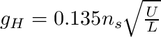,
where  is the wind speed just outside of the primitive boundary-layer, and is the characteristic length/dimension in the streamwise direction of the object that the primitive belongs to. For a leaf consisting of a single primitive, could be assumed to be the length of the primitive. If the primitive belongs to a Tile Compound Object, the plug-in will automatically use the dimension of the entire tile object and not that of a single patch/tile. Note that
is the wind speed just outside of the primitive boundary-layer, and is the characteristic length/dimension in the streamwise direction of the object that the primitive belongs to. For a leaf consisting of a single primitive, could be assumed to be the length of the primitive. If the primitive belongs to a Tile Compound Object, the plug-in will automatically use the dimension of the entire tile object and not that of a single patch/tile. Note that  describes transfer from both sides of the plate/primitive, but transfer from each side of the plate/primitive is asymmetric because of buoyancy forces. 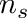 is the number of primitive faces, which is determined by the value of primitive data "twosided_flag" (twosided_flag=0 is single-sided and 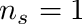, twosided_flag=1 is two-sided and
describes transfer from both sides of the plate/primitive, but transfer from each side of the plate/primitive is asymmetric because of buoyancy forces. 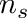 is the number of primitive faces, which is determined by the value of primitive data "twosided_flag" (twosided_flag=0 is single-sided and 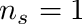, twosided_flag=1 is two-sided and  ).
).
Chen et al. (1986) provide a correlation for the boundary-layer conductance of a flat plate that is inclined with respect to the mean ambient flow direction. The correlation assumes that the plate is infinite in the spanwise direction, and has length in the other direction.
The boundary-layer conductance for a plate inclined at is given by
![$g_H(\theta_L)=\frac{\rho_a \nu}{Pr\,D_L}2F_1Re^{1/2}\left\{1\pm\left[\frac{2F_2\left(Gr\,\mathrm{cos}\,\theta_L/Re^2\right)^{1/4}}{3F_1}\right]^3\right\}^{1/3},$](form_31.png)
and for  as
as
![$g_H(\theta_L)=\frac{\rho_a \nu}{Pr\,D_L}2F_1Re^{1/2}\left\{1\pm\left[\frac{F_3\left(Gr/Re^{5/2}\right)^{1/5}Gr^{C(\theta_L)}}{6\left[0.2+C(\theta_L)\right]F_1}\right]^3\right\}^{1/3},$](form_33.png)
where , , and  are respectively the molar density, kinematic viscosity, and Prandtl number of air, is the effective leaf dimension (Parkhurst 1968), is the Reynolds number based on and the local free-stream air velocity, and is the Grashof number which is defined here as
are respectively the molar density, kinematic viscosity, and Prandtl number of air, is the effective leaf dimension (Parkhurst 1968), is the Reynolds number based on and the local free-stream air velocity, and is the Grashof number which is defined here as
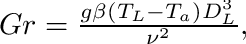
where  is the acceleration due to gravity, and
is the acceleration due to gravity, and  is the volumetric thermal expansion coefficient which we approximate as the inverse of absolute ambient air temperature
is the volumetric thermal expansion coefficient which we approximate as the inverse of absolute ambient air temperature  with
with  in units of Kelvin. The plus and minus signs corresponds to buoyancy assisting flow and opposing flow cases, respectively. In the present model, the mean wind vector is always orthogonal to the gravity vector (transverse flow), and thus we always take the positive or buoyancy assisting flow case. The constants in the correlations are defined as
in units of Kelvin. The plus and minus signs corresponds to buoyancy assisting flow and opposing flow cases, respectively. In the present model, the mean wind vector is always orthogonal to the gravity vector (transverse flow), and thus we always take the positive or buoyancy assisting flow case. The constants in the correlations are defined as
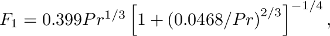
![$F_2=0.75Pr^{1/2}\left[2.5\left(1+2Pr^{1/2}+2Pr\right)\right]^{-1/4},$](form_45.png)
![$F_3=Pr^{1/2}\left[0.25+1.6Pr^{1/2}\right]^{-1}\left(Pr/5\right)^{0.2+C(\theta_L)},$](form_46.png)

Chen et al. (1986) mention that the equation for is valid for 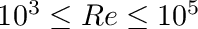, and the equation for is valid for  . We expect leaf Reynolds numbers somewhere between
. We expect leaf Reynolds numbers somewhere between  and
and  . Average
. Average  values are usually on the order of 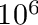. When
values are usually on the order of 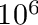. When  , it is possible for to drop below 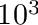, however in these cases the net radiation is usually nearly zero and convective heat fluxes are low anyway.
, it is possible for to drop below 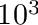, however in these cases the net radiation is usually nearly zero and convective heat fluxes are low anyway.
Bird et al. (1960) provides correlation for forced convection heat transfer in laminar flow around a sphere
 ,
,
where  is the sphere diameter, and is the wind speed outside of the sphere boundary-layer.
is the sphere diameter, and is the wind speed outside of the sphere boundary-layer.
Kustas and Norman (1999) suggest a simple relationship for the convective heat conductance over flat, bare ground:
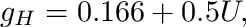
where is the wind speed at a height above the soil surface where the effect of the soil surface roughness is minimal; typically 0.05 to 0.2 m.
The model can be run to calculate the boundary-layer conductance for all primitives or a sub-set of primitives using the appropriate run function below.
| Model Run Function | Description |
|---|---|
| BLConductanceModel::run( void ) | Run model calculations for all primitives in the Context. |
| BLConductanceModel::run( std::vector<uint> UUIDs ) | Run model calculations for a select set of primitives in the Context, which are specified by a vector of their UUIDs. |